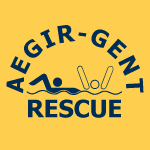

Reddingszwemwedstrijden op Belgisch en internationaal niveau — disciplines, regels en praktische info.
Reeks A-disciplines worden afgelegd in open water — zee, rivier of meer. Ze simuleren reële reddingssituaties in een omgeving met golven, stroming en wind.
90 m sprint op het strand. Snelheid en explosiviteit staan centraal.
Waden door ondiep water met hoge knieën. Kracht en techniek bepalen het verschil.
Liggend starten, 20 m sprint en grip op een stok. Reflexen en reactiesnelheid zijn cruciaal.
Zwemmen met rescuetube, slachtoffer redden en terugbrengen naar het strand.
Rescue board gebruiken om een slachtoffer in open water te redden en terug te brengen.
Kajakachtige surf ski inzetten voor een reddingsactie in open water.
Reeks B-disciplines vinden plaats in het zwembad. Ze combineren zwemtechniek met het ophalen van een dummy of het slepen van een slachtoffer.
Zwemmen over en onder obstakels in het zwembad. Wendbaarheid en snelheid zijn doorslaggevend.
Duiken, dummy ophalen van de bodem, en 100 m slepen tot aan de kant.
Zelfde als B2 maar uitgevoerd met flippers. Snelheid en kracht spelen nog meer een rol.
Combinatie van zwemmen, duiken, ophalen en slepen over 200 m. De zwaarste individuele discipline.
De competitiekalender wordt gepubliceerd door de Vlaamse Reddingsfederatie (RedFed). Raadpleeg steeds de meest recente versie op redfed.be.
Tijdens wedstrijden kan je de live-uitslagen volgen via onze LiveResults-pagina.
Live uitslagen bekijken
Reddingszwemmen valt onder het Vlaamse en Belgische anti-dopingbeleid. Zowel in competitie als buiten competitie kunnen atleten gecontroleerd worden. Aegir Gent ondersteunt een sportieve en eerlijke reddingssport.
Het Nationaal Anti-Doping Agentschap Belgium (NADO) is verantwoordelijk voor controles en educatie. Meer info op nado.be.
Raadpleeg de meest recente verboden lijst op de website van WADA of NADO. Medicijnen controleren via globalDRO.com.
Heb je een medische noodzaak voor een verboden middel? Vraag tijdig een TUE (Therapeutic Use Exemption) aan via NADO.